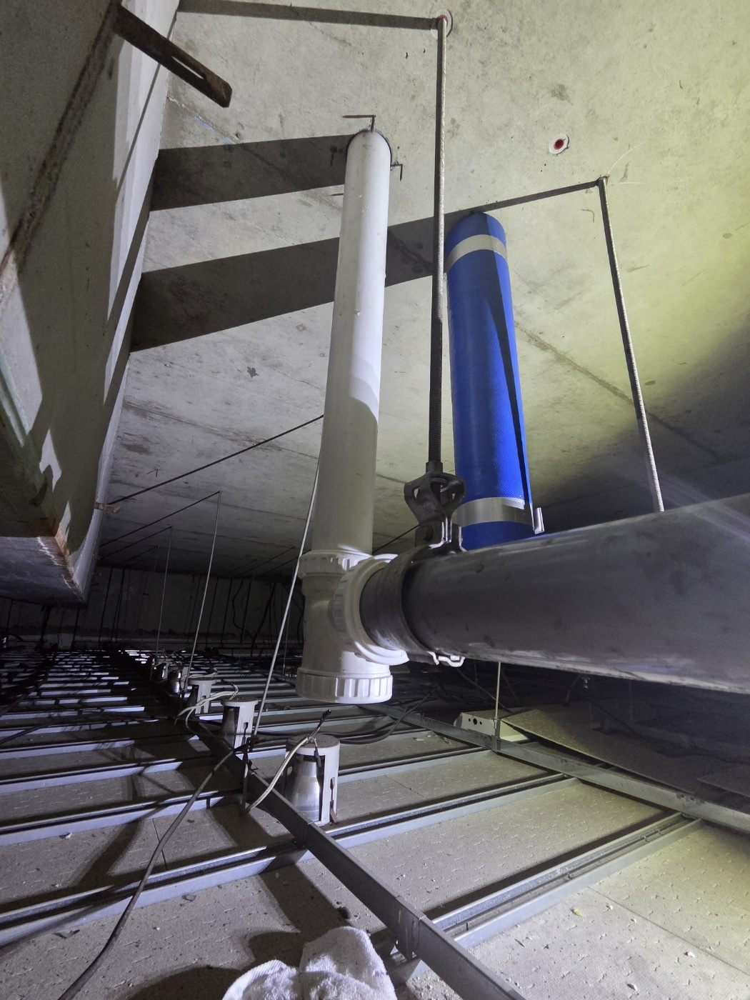
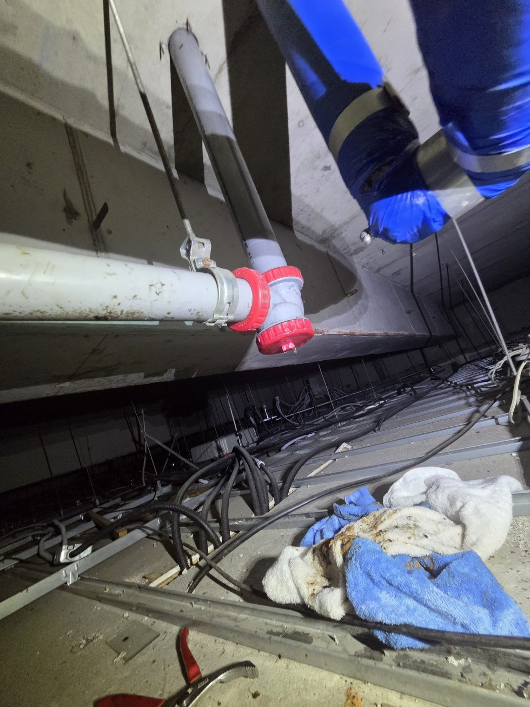
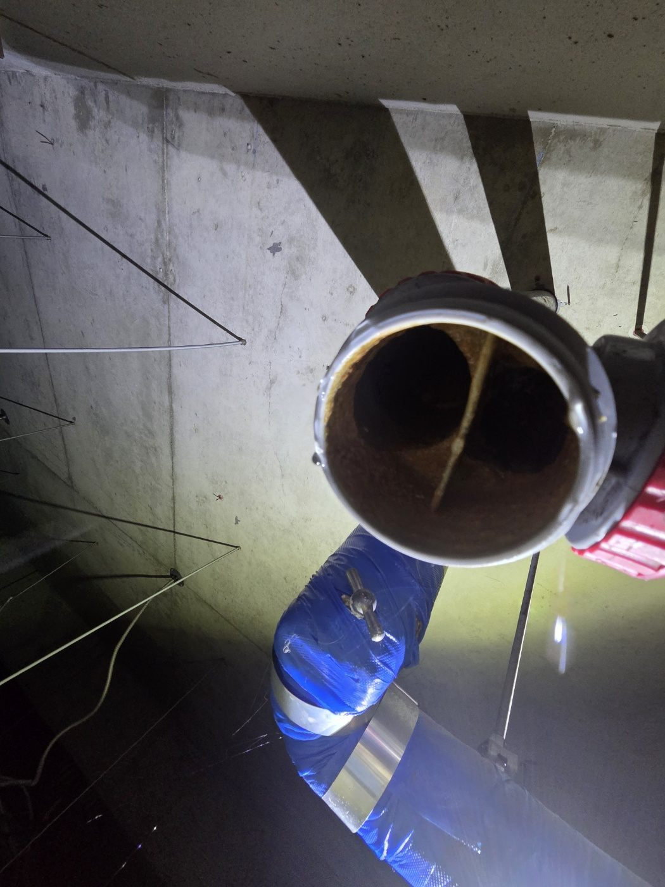
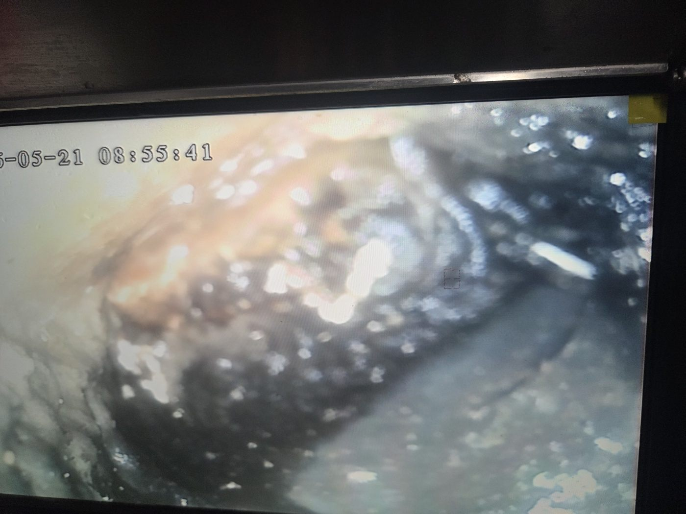
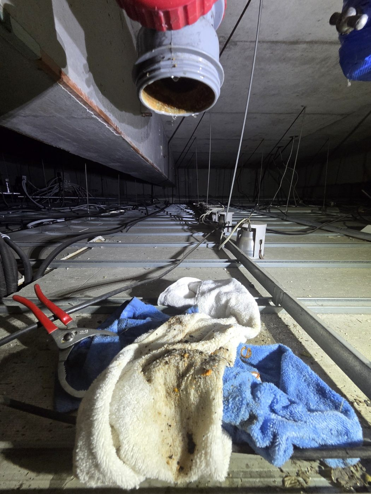

안성시 공도읍 풍림상가에서 배관 노후로 인한 누수가 의심되어 점검한 현장입니다. 상가 천장 위 공간에는 급수·배수 배관이 여러 갈래로 지나가고 있어서, 어느 구간이 문제인지 먼저 살펴야 했습니다.

천장 위 배관과 연결부를 하나씩 살펴보고, 문제가 있는 구간의 배관을 절단해 안쪽 상태를 확인했습니다. 오래된 배관은 겉보다 안쪽 부식이 먼저 진행되는 경우가 많아서, 단면을 직접 보는 것이 중요합니다.


필요하면 내시경 카메라로 배관 안쪽을 들여다보기도 합니다. 이번에도 모니터로 배관 내부 상태를 확인했습니다.

배관 노후는 한 군데만 고쳐서는 다른 구간에서 다시 문제가 생기기 쉽습니다. 그래서 문제가 확인된 구간은 부분 보수보다 새 배관으로 교체하는 방향으로 진행했습니다. 작업 중에는 배관에서 나온 물과 이물질을 수건으로 닦아가며 정리했습니다.

배관은 오래될수록 안쪽에 녹과 이물질이 쌓이고 두께가 얇아집니다. 같은 시기에 설치된 배관은 한 구간이 새면 다른 구간도 곧 약해지는 경우가 많아서, 균열 한 곳만 보수하면 얼마 뒤 다른 곳에서 다시 공사를 해야 할 수 있습니다. 그래서 배관 상태를 확인한 뒤 교체 범위를 정하고, 교체 후에는 압력을 걸어 연결부 누수가 없는지 확인합니다.
오래된 상가일수록 배관 노후로 인한 누수가 한 번 고쳤다고 끝나지 않을 수 있습니다. 영업 중인 매장은 누수 방치가 영업에도 영향을 주는 만큼, 천장이나 벽에서 반복되는 누수가 있다면 배관 상태를 전체적으로 점검받아 보시길 권합니다.
영업 중인 매장이라면 작업 시간과 범위를 미리 조율하고, 정확한 진단 후 안내해 드린 견적에 동의하신 경우에만 작업을 진행합니다. 안성 공도 지역 상가 누수 문의는 편하게 연락 주세요.
비슷한 증상으로 문의하실 곳을 찾고 계신다면 전화로 접수해 주세요. 접수 건은 확인 후 신속하게 연결해 안내해 드리며, 현장 진단 후 견적에 동의하신 뒤에만 작업이 진행됩니다.